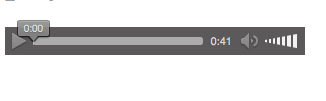
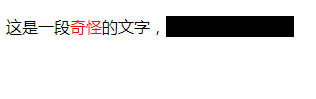

HTML：4——标签2
本文按照 Mozilla 贡献者基于 CC-BY-SA 2.5 协议发布的以下文章改编:
- https://developer.mozilla.org/zh-CN/docs/Learn/HTML/Multimedia_and_embedding/Video_and_audio_content
- https://developer.mozilla.org/zh-CN/docs/Learn/HTML/Introduction_to_HTML/Getting_started
- https://developer.mozilla.org/zh-CN/docs/Learn/HTML/Introduction_to_HTML/HTML_text_fundamentals
列表
现在假设我要列出Mojang Studios的几个员工，就像下面这样，该怎么做呢？
- Jens ‘Jeb’ Bergensten
- Nathan ‘Dinnerbone’ Adams
- Mikael ‘Slicedlime’ Hedberg
代码如下，如果你要写自己的列表可以照着这个写。列表里内容数量不限，只需要再加入<li></li>即可。
1 | <ul> |
这是无序（unordered）列表。还有有序（ordered）列表：
噼哩噼哩番剧排行（某年某月某日记录的）
- 关于我转生变成史莱姆这档事 第二季
- 死神少爷与黑女仆
- 精灵幻想记
- 转生成为了只有乙女游戏破灭Flag的邪恶大小姐 第二季
- 侦探已死
代码其实就是把<ul>改成<ol>：
1 | <p>噼哩噼哩番剧排行（某年某月某日记录的）</p> |
有时候我们还会需要嵌套列表：
Mojang Studios
- 臭写代码的
1. Jens 'Jeb' Bergensten 2. Nathan 'Dinnerbone' Adams- 画画的
1. Markus 'Junkboy' Toivonen 2. Ninni Landin
代码也一样，像这里的话，就是让两个无序列表成为有序列表的一个<li>元素。
1 | <p>Mojang Studios</p> |
如果你觉得看不懂的话，可以这么理解：把这一段：
1 | <p>臭写代码的</p> |
看成一个这是某一段文本的话，就和一个无序列表一样了。
再谈属性
灯只有“开”和“关”两个状态（谁要是跟我说“为什么没有‘坏’这个状态”，我直接把他宰了），如果把“开”当成True，“关”当成False，那么只有True和False的东西，我们称之为布尔变量。HTML中的属性也有布尔属性。比如说HTML中的输入框<input>，我们可以用这样的代码让他不能输入：
1 | <input type="text" disabled> |
也就是说，有的属性可以不需要打="xxxx"这一串，这些属性就是布尔属性。它相当于一个开关，比如说这里就是把“disable”这个开关打开。
还有的属性是用来辨识当前元素的。假如我开了一个网络小说网站，现在有一大堆<p>元素，其中有的是写的文章的自然段，有的是网站的一些其他文本。现在我要给所有网文自然段加上好看的Noto Sans CJK字体（当然这需要CSS），怎么让浏览器知道哪些文本应该改字体，哪些文本不需要呢？
我们给这些<p>元素标记一下，有的标记成“自然段”，有的不标记，浏览器就知道标记了的<p>元素需要改字体。这里就要用到HTML的一个属性——class。class就是“类”的意思。HTML的每种元素都可以带class属性。回到我们之前说的<p>元素：
1 | <p class="paragraph">了解清楚计算机社是全学校最垃圾的社团到底是一种怎么样的存在，是解决一切问题的关键。 可是……</p> |
注：上述文本由已经通过图灵测试的狗屁不通文章生成器生成。
还有，我并没有说class的属性一定要写paragraph，或者什么属性写成paragraph就会有好看的字体之类的。class属性的值是随你写的，至于有这个属性的元素到底会产生什么变化，也是你写的CSS决定的。
一个元素还可以有多个类：
1 | <p class="paragraph book article">一段文字</p> |
上面的<p>元素就有paragraph、book和article三个类。在CSS里写了每个类对应的样式之后，这段文本就会同时渲染这三种样式。（如果你问冲突了怎么办的话，请看CSS篇）
还有一个和这个很像的属性，它也是任何元素都可以用的，用来找到某个特定的元素。它就是id。在同一个HTML里，id的属性值必须是唯一的。假如你写了CSS，说id="title"的元素要加大字号，那么这个唯一的元素显示的样子就会改变。id还有一个用途，就是页面内跳转。（还是狗屁不通文章生成器，嘿嘿）
1 | <h1>《996的自我修养》</h1> |
<p>点击<a href="#charpter2">链接</a>直接跳到第二章</p>这一句的“链接”两字会被加上超链接，点击它，文本会直接跳转到第二章。你可以自己试试。（可能由于第二章标题已经出现在了视野中，你是看不到“跳转”的，那样的话就多加点废话进去）
空白
1 | <h1> 《 好 兄 弟 》 </h1> |
上面这两段HTML显示起来是一样的，都是：
《 好 兄 弟 》
无论你在HTML元素的内容中使用多少空格(包括空白字符，包括换行)，渲染的时候，连续出现的空白符（包括回车）都会变成一个空格。没错，不管是带文本的元素之外，还是带文本的元素之内，都一样。
那么为什么我们会在HTML元素的嵌套中使用那么多的空白呢? 答案就是为了可读性 —— 如果你的代码被很好地进行格式化，那么就很容易理解你的代码是怎么回事，反之就只有聚做一团的混乱.。在我们的HTML代码中，我们让每一个嵌套的元素以两个空格缩进。 你使用什么风格来格式化你的代码取决于你 (比如所对于每层缩进使用多少个空格)，但是你应该坚持使用某种风格。
——GCV Ctrl+C Ctrl+V 自 MDN
实体引用
那我偏要打很多空格怎么办？
也是可以解决的。如果你打了一个 ，在解释的时候，就会变成空格。比如说这样一段：
1 | <p>啊   这</p> |
它显示的时候就会有三个空格。
同样还有别的问题，比如说，如果要打一个尖括号呢？如果直接打，是会被当成标签的。<就是左尖括号（小于号），>就是右尖括号（大于号）。比如说这个，前一句是错的，后一句就可以显示正确的样子：
1 | <p>HTML 中用 <p> 来定义段落元素。</p> 错的！ |
上面这种用一串奇奇怪怪的东西代替一个字符的方式叫实体引用。这里有一个表格：
| 原义字符 | 等价字符引用 |
|---|---|
| < | < |
| > | > |
| " | " |
| ' | ' |
| & | & |
注释
如果你写了一段超级长的HTML，n年后维护的时候，你很有可能发现不知道你写了什么。因此，你当初需要写注释，来避免这种情况的发生。或者，你写了HTML给别人看，他看不懂你写了什么LJ玩意。这也需要你写注释。
浏览器不会渲染注释的内容，用户也看不到它，只有看源码的人才能看到。
把一段东西变成注释，只需要用<!--和-->把东西包起来。下面这段代码，由于第一句在注释外，第二句和第三句在注释内，所以只会显示“我在注释外！”。
1 | <p>我在注释外！</p> |
音视频
要是你可怜的网页没有音视频，大概很多人都会不感兴趣。所以，来学习嵌入音视频吧。
视频
由于GCVillager是_________，所以这里还是放一个__________的视频。
1 | <video controls> |
正常显示起来大概是这样，一个简易的播放器：

解释一下：controls是video元素的一个属性（还是布尔属性），选了之后会多出来一个栏，让用户可以拉进度条啊，调音量之类的。source就是字面意思，src里面就是视频的链接，type属性向浏览器说明了视频的格式。由于video元素是HTML5加的，如果别人在用IE之类的垃圾浏览器，可能看不了你的视频。这时候，剩下的内容叫后备内容，写了它，可以让那些用户至少还能把视频下过来看（记得提醒他们换浏览器）。
假如你做了一个视频网站，有时候，可能你的某个小服务器维护啊之类的；或者因为mp4是有版权费的，有的浏览器买不起就不支持mp4，这时候就需要其他的视频源。
1 | <video controls> |
这样就有两个视频源了，如果第一个不行就默认第二个。你还可以写第三个第四个第五个第六个第七个第八个第九个第十个，只需要照着样子加在后面。
其他视频属性
1 | <video controls width="400" height="400" |
width和height：和图片差不多，就是限定大小。方便嵌入到页面的某个部分，不打乱排版。autoplay：打开页面就自动播放。（当然可能会被浏览器阻止）loop：循环播放，就是放完再放。muted：默认静音。当然用户可以自己把声音打开（如果你加了controls控制条的话）poster：指向一张图片的链接，在视频播放前显示，可以做预览或者广告。不过在本例中，由于自动播放的存在，大概是看不到那张图片了。preload：可以用来缓存较大的文件。这个属性有三个选项：none不缓冲，auto页面加载后缓存媒体文件，metadata只缓存媒体文件的元数据。
综合运用一下，假设我们要在网页靠上方的地方嵌入一个长条广告，人总是要恰饭的嘛。
1 | <video width="800" height="100" |
广告可以控制进度可能就不像广告了，所以删掉controls来删掉控制条。为了逼别人看，而且他浏览这个网页的时候让他一直能看到，就开autoplay和loop。广告有声音太吵了给人骂，所以静音（您做广告的时候不加声音不就好了吗？）。缓存的话……在这个例子里加和不加也没什么区别，因为自动播放了嘛，本来就是加载好就开始播放的。
音频
音频和视频差不多。如下：
由于_________，所以__________。（不会还有人不会填这句话吧？）
1 | <audio controls> |
效果如图：

不过有一点差异：没有width和height，也没有poster，原因很简单吧，音频又不能看。
span元素
现在先假设一下，有一个CSS，它可以让你所有带red类的文本变成红色，而且让所有带hide类的文本背景变成黑色（这样黑色文字就躲在阴影里看不见了）。现在我们要有这样的效果：

如果直接给<p>上class，那么整个句子都会被渲染，那可不行。正确做法就是使用span。如下：
1 | <p>这是一段<span class="red">奇怪</span>的文字，<span class="hide">这里你是看不见的</span></p> |
当然你自己写HTML的时候是不会显示成图片里那样子的啦，毕竟你没加CSS嘛……以后再讲。